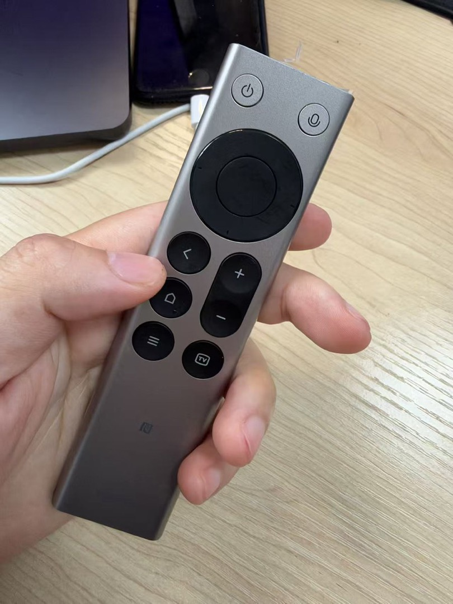
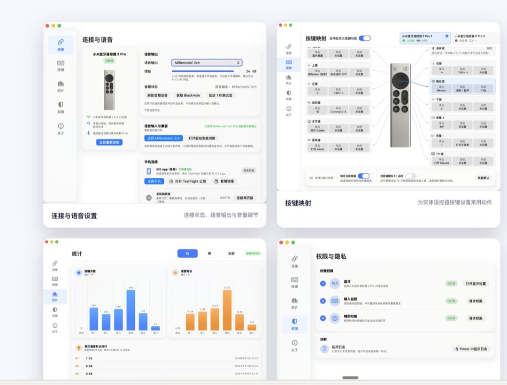
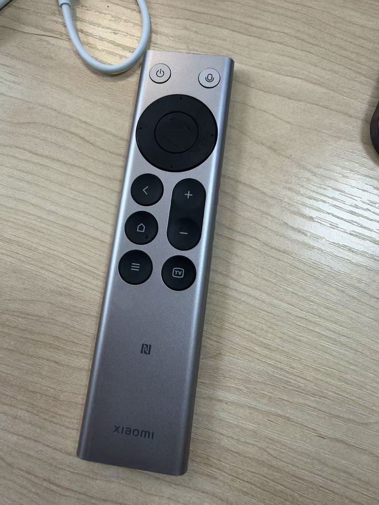
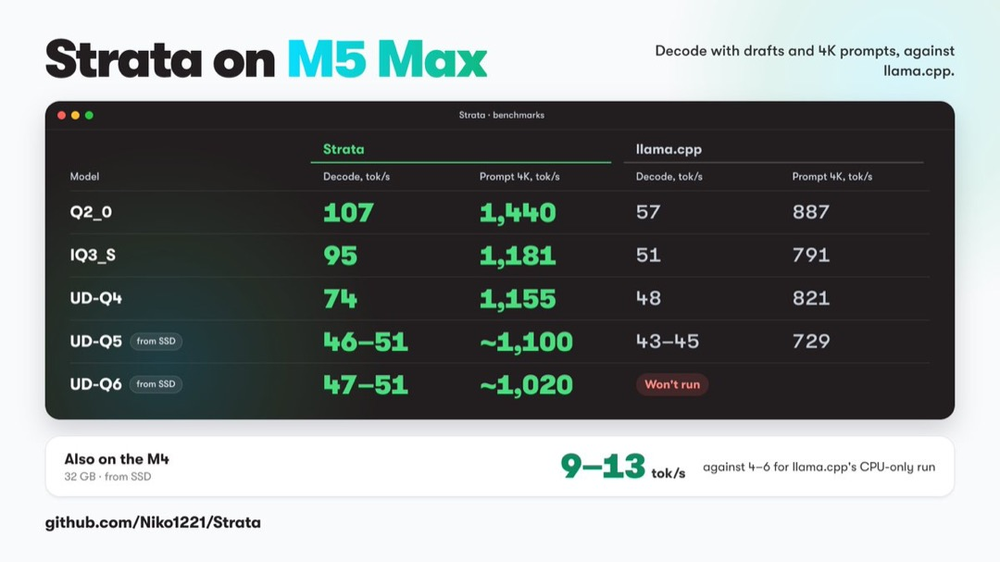

本期速览
02 AgentEnv框架构建RL训练环境
03 Qwen3.8-Flash支持Mac部署
04 Claude Code交付20万行项目
05 Fiverr低端订单被AI加速淘汰
07 Baseten发布推理工程免费教材
01｜小米遥控器成VibeCoding硬件
来源（X） · @andynotbot · 2026-10-13 15:26
已经买了一段时间了，今天正好把它给用上了，非常的好。其实说实话，
游戏手柄、无线麦克风、M5Stack 我都试过，跟它完全没法比。
别家打着 Vibe Coding 旗号的硬件，动不动卖你几百上千。
一个月充一次电，不用重连，拿起来就能用。
按住说话，按中间提交，上下左右做选择，还能映射单击、双击、长按。
GitHub 上搜 remote-mic-app，开源客户端，不顺手还能自己改。
写代码最贵的从来不是设备，是你懒得开口。这个就几十块钱，项目在下面，大家可以自取。



02｜AgentEnv框架构建RL训练环境
来源（X） · @alacheng · 2026-10-14 11:15
AgentEnv Framework 是一个 Python SDK 和 CLI，用于构建、部署和运行Agent环境以及对环境中的Agent进行评分的任务。
也就是说可以基于这个RL开源框架，开发具有自己业务属性的RL环境。
可以这么说这些前沿的AI数据公司，有对市场的感知和预测能力，他们肯定看到了RL环境将不断细分，所以这个开源框架就是基础设施，占住这种核心位置先。
https://github.com/scaleapi/agentenv-framework
03｜Qwen3.8-Flash支持Mac部署
来源（X） · @aidavid125 · 2026-10-14 09:21
Strata作者确认：
Qwen-3.8-Flash可以运行在Mac系统上了。
有Mac的兄弟们，满足需求的可以试下了。
引用内容
Niko Veit @coldniko
中文译文
你现在可以在任何搭载 Apple Silicon 的 Mac Mini、Mac Studio 或 MacBook 上运行 Qwen3.8-Flash-Next（即使内存不足也可以）。
这是我们的基础性能表现。从这里开始，它只会变得更好。
原文
You can now run Qwen3.8-Flash-Next on any Mac Mini, Mac Studio or MacBook with Apple Silicon (Even without enough RAM).
This is our base performance. From here, it will only get better.

04｜Claude Code交付20万行项目
来源（X） · @fkysly · 2026-10-14 12:56
我也已经纯 AI Coding 从春节用到现在了：
- 完成了一个的20万行级别的生产项目
- 完成了 dsh-market & awesome-dsh-plugin 的维护
主力就是 Claude Code + Opus，从 3.7 一直搞到现在 5.5，前期用的拉尔夫循环，后面改成自带的 /goal。
对于 dsh-market 来说，相对生产项目更简单一些，我也用了很多 deepseek v4.1 flash，也没啥问题。
这套软件研发流程本身，是需要作者自己有架构设计能力和测试体系的设计。只是把软件生产的过程交给编码能力更强的 Opus 和 Claude Code Agent，这就好比大型游戏公司把项目技术外包给白金工作室一样。专业的编程模型既然都拥有超强的编程能力，把活儿交给他们，甚至比我自己写的还好。但是人需要把控大的方向。
05｜Fiverr低端订单被AI加速淘汰
来源（X） · @kenshinji · 2026-10-14 09:52
结果看了 Fiverr 最新的财报：活跃买家确实从 2023 年的 408 万掉到了 270 万，少了三分之一。但每个买家一年花的钱，反而从 278 美元涨到了 368 美元。
我是因为零工经济才知道 Fiverr 的，上面很多人接的是翻译、写文案、做个小网页这类小单。这些活现在 AI 分分钟就能搞定，所以我才以为它快不行了。
在油管上看了一期拆解它的视频（链接见评论），大概是这样：
1. AI 吃掉的是小单。写作、翻译这类便宜、量大的活，交易量一年少了 24% 以上。
2. 留下来的是大单。今年一季度，在平台上完成 1000 美元以上项目的客户，同比多了 18%。
3. Fiverr 自己也在转型，说要从"便宜、快"转向更高价值的项目。但全年收入预期已经下调到 3.56 到 3.72 亿美元，比去年少 14% 到 17%。
所以不是外包没人要了，而是便宜、简单的活没人要了。
Fiverr 这个名字，就来自它最早每单 5 美元的定价。以前这些小单比的就是谁更便宜，很多卖家靠压价抢单。现在 AI 比最低价还便宜，还更快，这场价格战直接被打没了。
你觉得哪些活，AI 还抢不走？
06｜意图经济下Agent产品设计方向
来源（X） · @xizhe_chan · 2026-10-13 21:03
按照我对原文的理解，转述一下：
第一：什么是意图经济（本质是Agent经济）？
- 注意力经济：算法猜你想要什么，不断推内容给你，商家靠抢你的注意力赚钱。
- 意图经济：你直接告诉 Agent 你要什么（比如订明晚的酒店），Agent 去比较几万条商品信息，选出最合适的。
第二：Agent 挑东西看什么？
1.不看营销看排名。当用户偏好明确时，营销话术不起作用，但评分影响极大。
2. 不看注意力，看匹配度。搜索排名、付费广告、网红种草这些抢注意力的手段会贬值，商家要把精力放在让产品匹配意图上。
第三：具体要做什么？
被发现 ➡ 被信任 ➡被执行
- 被发现：商品页能被agent访问和索引，名称、型号、品牌、类目、链接稳定，并向平台提供规范的商品数据。
例如：机票酒店数据本来就结构化，所以最先火。
- 被信任：数据前后一致、可交叉验证。
- 被执行：币种、规格、适用范围这类约束条件写清楚。人看商品时不太在意这些，但 Agent 要靠它们完成下单。
简单说，过去的商品页是写给人看的，要好看、要勾人。现在要多做一版写给 Agent 看的，要准确、结构化、可验证。
第四：意图经济下，产品的设计核心是：如何让产品更能理解 Users 的意图。
具体来说，可以有几个切实的方向
（1）为产品加装硬件。既然 agent 需要对意图理解清楚，那么可以为 agent 引入眼睛和耳朵，也就是类似的录音笔和智能眼镜类产品。
（2）长期记忆是最大的壁垒。目前的 Personal Agent 跨对话记忆远远不够，真正需要的是跨 App 整合，并能够随着时间推移做迭代，精准识别并预测用户的习惯与需求，形成长期记忆。
除此之外，文中有一点也让人眼前一亮，就是提到关于 KOL 的转型。由于 KOL 与网红本质是注意力经济的产物，所以必将进行新一轮迭代。
面向未来的 KOL 应该有两类方向：
1. 内容具有独特的审美 taste，无法被 AI 模仿
2. 有极端的权威背书，能够经得起 Agent 的 cross check。
读完之后想到很多，确实振聋发聩，眼前一亮，算是又能拿出去跟别人吹牛逼了，哈哈哈
引用内容
Max｜Fovea @maxjjiang
中文译文
原文
07｜Baseten发布推理工程免费教材
来源（X） · @baseten · 2026-09-22 00:29
中文译文
推理工程还没有教科书。所以我们写了一本。264页，免费的 PDF 和有声书。
原文
Inference engineering doesn't have a textbook yet. So we wrote one. 264 pages, free PDF and audiobook.